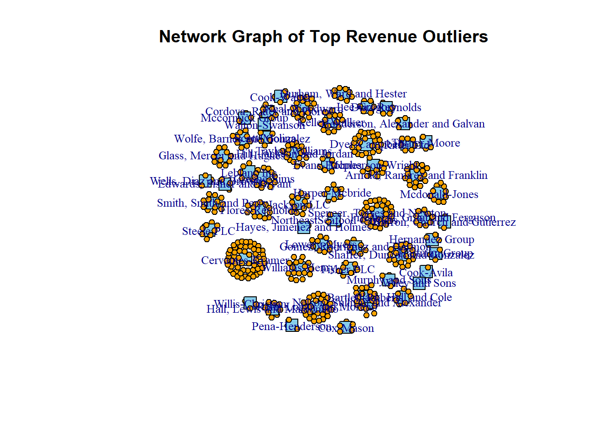

pacman::p_load(ggraph,dendextend,tidygraph,jsonlite,dplyr,lubridate,igraph,ggplot2,gridExtra)Take-home_Ex03
Installing R Packages
*# Load JSON data
json_data <- fromJSON('data/MC3/mc3.json')# Extract the nodes and edges
nodes <- json_data$nodes
edges <- json_data$links# Data Processing
# Ensure 'id' columns and edge 'source'/'target' columns are character type
nodes$id <- as.character(nodes$id)
edges$source <- as.character(edges$source)
edges$target <- as.character(edges$target)
# Convert date fields in nodes
nodes$`founding_date` <- as.Date(nodes$`founding_date`, format = "%Y-%m-%d")
nodes$`_last_edited_date` <- as.Date(nodes$`_last_edited_date`, format = "%Y-%m-%d")
nodes$`_date_added` <- as.Date(nodes$`_date_added`, format = "%Y-%m-%d")
# Convert date fields in edges
edges$`start_date` <- as.Date(edges$`start_date`, format = "%Y-%m-%d")
edges$`end_date` <- as.Date(edges$`end_date`, format = "%Y-%m-%d")Problem Statement 1: Identify the network associated with SouthSeafood Express Corp and visualize how this network and competing businesses change as a result of their illegal fishing behavior.
Analysis
Problem Statement 2: Which companies benefited from SouthSeafood Express Corp legal troubles?
Analysis
Problem Statement 3: Are there any other suspicious transactions that may be related to illegal fishing?
Data Processing
# Convert nodes to a data frame for filtering purposes
nodes_df <- as.data.frame(nodes)
# Filter the dataset for companies involved in fishing, sea food, and seafood
fishing_companies <- nodes_df %>%
filter(grepl("fish|sea food|seafood", TradeDescription, ignore.case = TRUE))
# Remove rows with missing or non-finite revenue values
fishing_companies <- fishing_companies %>%
filter(!is.na(revenue) & is.finite(revenue))
# Identify top outliers by revenue (95th percentile)
top_outliers <- fishing_companies %>%
filter(revenue > quantile(revenue, 0.95, na.rm = TRUE))
# Display top outliers
print(top_outliers) type country
1 Entity.Organization.Company Lumakari
2 Entity.Organization.Company Isla Solmar
3 Entity.Organization.Company Valtalmo
4 Entity.Organization.FishingCompany Oceanus
5 Entity.Organization.FishingCompany Korvelonia
6 Entity.Organization.FishingCompany Faraluna
7 Entity.Organization.Company Mawandia
8 Entity.Organization.FishingCompany Naraliket
9 Entity.Organization.FishingCompany Kondanovia
10 Entity.Organization.Company Korvelonia
11 Entity.Organization.Company Isla Solmar
12 Entity.Organization.FishingCompany Wysterion
13 Entity.Organization.Company Kondanovia
14 Entity.Organization.Company Mawandia
15 Entity.Organization.Company Mawandia
16 Entity.Organization.Company Uzifrica
17 Entity.Organization.FishingCompany Kondanovia
18 Entity.Organization.FishingCompany Azurionix
19 Entity.Organization.Company Isla Solmar
20 Entity.Organization.Company Mawandia
21 Entity.Organization.Company Brindivaria
22 Entity.Organization.Company Oceanus
23 Entity.Organization.Company Mawandia
24 Entity.Organization.Company Brindivaria
25 Entity.Organization.FishingCompany Novarctica
26 Entity.Organization.Company Kondanovia
27 Entity.Organization.LogisticsCompany Novarctica
28 Entity.Organization.Company Mawalara
29 Entity.Organization.Company Mawandia
30 Entity.Organization.FishingCompany Marifada
31 Entity.Organization.FishingCompany Wysterion
32 Entity.Organization.FishingCompany Galduzim
33 Entity.Organization.FishingCompany Valtalmo
34 Entity.Organization.FishingCompany Mawalara
35 Entity.Organization.FishingCompany Brindivaria
36 Entity.Organization.FishingCompany Marifada
37 Entity.Organization.Company Valtalmo
38 Entity.Organization.FishingCompany Oceanus
39 Entity.Organization.FishingCompany Mawandia
40 Entity.Organization.FishingCompany Oceanus
41 Entity.Organization.FishingCompany Faraluna
42 Entity.Organization.Company Kondanovia
43 Entity.Organization.Company Valtalmo
44 Entity.Organization.Company Valtalmo
45 Entity.Organization.FishingCompany Khamposa
46 Entity.Organization.Company Kondanovia
47 Entity.Organization.Company Korvelonia
48 Entity.Organization.Company Faraluna
49 Entity.Organization.Company Yggdrasonia
50 Entity.Organization.Company Brindivaria
51 Entity.Organization.Company Brindivaria
52 Entity.Organization.FishingCompany Kondarica
53 Entity.Organization.LogisticsCompany Quirinelle
54 Entity.Organization.FishingCompany Oceanus
55 Entity.Organization.FishingCompany Oceanus
ProductServices
1 A vegetable two-piece hard-shell capsule with the locking system made from hypermellose; A two-piece hard-shell capsules with the locking system made from gelatin derived from fish; low powder retention CAPS, which are used to deliver medicinal powders to the human lung using an inhaler device; and SLS-Free capsules, which are produced without using sodium lauryl sulfate for dietary applications
2 Frozen sea food products
3 Fish hatcheries and fish farms
4 Development of real estate properties, administration of project contracting business; Ocean freight transportation, and operation of deep sea fishing
5 Fish and seafood products
6 Fresh, cured, or frozen fish and seafood
7 Tuna, and other raw sea food materials; Sea foods ranging from various delicatessen dishes and delicacies (including salads and marinades) to retort-pack, chilled, and frozen foods
8 Seafood products (breaded and battered fish sticks and portions)
9 Seafood for the international and domestic markets
10 Organic and conventional aquaculture products
11 Primarily sells the following products: fish, (tuna, catfish, tilapia, sword fish, bass, trout, and salmon), shellfish, mollusks, crustaceans, sea vegetables, shrimp, lobster, squid, oysters, crabs, and clams
12 Seafood products include scrumptious tuna sensations made from premium Yellowfin Tuna mixed with a selection of flavorsome ingredients, wild pink and red salmon, the lunchboxed size tuna sensations with crackers, ready-to-eat marinated Greenshell Mussels
13 Through its subsidiary (production of salmon and trout)
14 Pharmaceuticals; Warehousing; Fresh and frozen sea foods
15 Entrusted procurement and sale of aircraft, aircraft components, airport facility equipment, uniforms, duty-free products and in-flight goods, as well as the aircraft leasing business for training purpose
16 Fishes, clams, crabs, lobsters, mussels, oysters, sea urchins, shrimp and other related marine products
17 Atlantic salmon and Rainbow trout
18 Fish and seafood products
19 Canned seafood, salad, and snack food products
20 A range of fresh and processed marine products
21 Raw shell on shrimps, block frozen, or packed I.Q.F
22 Alaskan pollock, salmon, protein noodles
23 Fish and meat products
24 Fish and fish products
25 Ice cream and frozen food (such as pastry, vegetables, fruit, fish and seafood, and ready meals)
26 Arctic pelagic fish, specializing in mackerel, horse mackerel, herring and capelin
27 Land operations, air and sea freight as well as comprehensive logistics solutions and global supply chain management from a single source; Local trucking and courier services, and freight transport by road services, as well as air freight; Arranging transportation of freight between shippers and carriers
28 Fish and fish products
29 Canned, frozen and other processed convenience foods, together with meats, animal feed and fish byproducts
30 Deep sea redfish, golden redfish, haddock, cod, saithe, greenland halibut, capelin, herring and blue whiting; Manages the largest share of quotas in the ocean around Marifada
31 Seafood products include Antarctic toothfish, arrow squid, barracouta, blue mackerel, gemfish, ghost shark, greenshell mussels, jack mackerel, john dory, king salmon, lemon sole, monkfish, orange roughy, patagonian toothfish, red cod, scampi, silver warehou, smooth oreo dory, snapper, and yellowbelly flounder
32 Fish and seafood products
33 Marine fishing
34 Fish and seafood product
35 Seafood products to retail trade and food service industries
36 Seafoods
37 Premium and super premium fishmeal
38 Frozen seafoods
39 Fish and seafood products
40 Seafood products
41 Seafood and other aquatic products
42 Salmon and trout; Supplies farmed cod and whitefish
43 Operation of fish hatcheries and preserves
44 Sea products
45 Fish and other seafood products (raw tuna, cooked loins, and finished products; and wetfish, such as sardines, squid and mackerel)
46 Exports salmon, whitefish, and pelagic fish
47 Tuna, precooked frozen loins, sardines, fish flour, and shrimps; Canned, frozen, noodles, beverages and other high quality products
48 Fresh and cooked frozen shrimp, frozen cephalopod, canned seafood, canned pet food, and ready to eat products, as well as bakery products, including pies, rotis, sandwich tunas, and brownies; Animal feeds and agricultural products, and steel and aluminum food packaging products
49 Offers fish fingers, fish cakes and fillets, sausages, beef and chicken burgers, pasta, and frozen meals
50 Frozen fish blocks and fillets; Breaded products
51 Foods and food products (meat, fish, and vegetables, as well as fresh meats, dairy products, dried fruits, nuts, and seeds); Raw materials and semi-manufactured products for various stages of the food processing industry; Bulk packed products for wholesalers and for the HoReCa segment
52 Fish and seafoods products
53 Shrimp supply and distribution
54 Deep-sea tuna longline fishing, deep-sea and coastal purse seiner fishing, crab fishing, bottom longline fishing and slern trawl fishing, tuna farming, manufacturing and trading of dehydrated food and various type of seasonings, and import and export of marine products
55 Prepared fresh or frozen fish and seafood products
PointOfContact HeadOfOrg
1 David Ballard Thérèse François
2 Theresa Aguilar Caridad Mora Vásquez
3 Kim Taylor Roberta Donarelli
4 Victoria Todd DVM Adán María Eugenia Galván
5 Joshua Allison Cory Macdonald
6 Danny Brown Melina Canetta-Bonomo
7 Monica Sanchez Inés Amador Vigil
8 Phillip Lopez Lucas Lombard
9 Amber Mitchell Luisa Chiesa
10 Tara Houston Sophia Storladi-Tresoldi
11 Sarah Day Hilda Meléndez Quesada
12 Nicholas Davis Susan Delmas
13 Natalie Burton Colleen Harrison
14 Philip Garcia Zacharie Poirier du Benoit
15 Rebecca Smith María José Octavio Echeverría Arreola
16 Miguel Kerr Anastasie du Couturier
17 Sandra Smith Roland Pages
18 Anthony Rogers Jeannine de la Carlier
19 Kevin Morales Dr. David Villanueva
20 Brad Griffith Temistocle Petrucelli
21 Mrs. Tammy Gomez Roberto Trapani
22 Joy Thomas Cecilia Alfredo Casares Vázquez
23 Amanda Black Jorge Emiliano Domínguez Aguilera
24 Nicole Hill Sig.ra Sylvia Nicolini
25 Krista Hunter Renata Gremese
26 Eric Daniels Natalie Robinson
27 Mason Mccall Richard-Thibaut Grenier
28 Shannon Ramirez Sandra Moreno
29 Jennifer Smith DDS Abigail Morse
30 Sarah Lewis Girolamo Tosi
31 Thomas Clark Denis Le Normand
32 Erik Carter Adriana Cuzzocrea
33 John Gibson Lic. Cornelio Correa
34 Maria Franco Timothée Maillet
35 Gerald Montgomery Madeleine-Gabrielle Hoarau
36 Vanessa Spencer Monique-Michèle Pons
37 Kim Taylor Sig. Bruno Burcardo
38 Randy Davis Auguste Poirier
39 Karen Arias Mtro. María Elena Mejía
40 Gene Gallagher Angelo Righi
41 Rebecca Taylor Mary Garcia
42 Mario Brooks Mercedes Gasperi-Cicala
43 Kevin Soto Reginald Rowe
44 Sandra Henderson Daniel Ollivier
45 Nathan Mccoy Jordan Hensley
46 Jill Mills Diane Masse de Bouchet
47 Susan Carr Gabriela Orosco
48 Rebecca Taylor Emiliano María José Hinojosa
49 Dr. Samantha Mckenzie DVM Ing. Fidel Robledo
50 Oscar Navarro Dott. Gianna Emanuelli
51 Taylor Mcdowell Christina Austin
52 Vanessa Salazar Aldo Hernandes Camacho
53 Jennifer Barnett Jeffrey Lowe
54 Lauren Wagner Howard Turner
55 Kofi Petrov Andrea Lewis
founding_date revenue
1 2013-03-26 505878.2
2 2031-12-18 627754.0
3 2010-04-06 385124.3
4 1956-03-06 1288524.2
5 1985-07-04 472046.8
6 1949-08-14 638261.7
7 1970-11-19 687583.4
8 1949-09-20 1081553.7
9 2025-12-18 641703.4
10 1996-01-03 422191.1
11 1945-10-06 762418.5
12 1987-10-17 344064.8
13 1996-12-24 647423.2
14 2023-01-28 5672003.6
15 2022-04-06 377669.4
16 1964-12-02 431569.5
17 2017-05-03 397769.7
18 1987-03-31 319416.3
19 1970-02-01 760025.8
20 1960-01-30 668985.7
21 2023-04-08 585698.0
22 2019-10-08 932666.7
23 2002-04-03 1205867.7
24 2012-07-03 490862.6
25 1945-01-26 340428.5
26 1998-06-08 656394.1
27 1961-12-17 1275143.2
28 1986-01-28 330853.4
29 2031-09-22 7085565.8
30 2031-04-04 487523.4
31 1975-04-13 339035.9
32 2010-04-08 400497.2
33 2018-01-15 412519.0
34 1974-12-27 503747.3
35 1968-08-18 515254.1
36 1978-11-23 381708.7
37 2032-04-08 733281.7
38 1987-07-16 454053.5
39 2034-08-12 756137.4
40 1974-11-04 707691.6
41 2019-06-29 667354.6
42 1964-03-15 859536.7
43 2021-02-06 1507513.7
44 2013-09-30 670483.2
45 2013-08-18 657105.4
46 2007-09-03 2040574.9
47 1992-01-17 512211.6
48 1987-12-14 4532442.9
49 1995-12-14 460699.2
50 1950-11-03 424548.2
51 2034-11-26 466025.8
52 2004-08-11 387972.2
53 1998-10-06 502469.8
54 2032-08-04 5580471.3
55 2032-09-14 506392.0
TradeDescription
1 Arnold, Ramirez, and Franklin is a well-known pharmaceutical company that specializes in developing and manufacturing innovative drug delivery systems. The company's product portfolio includes, a vegetable-based two-piece hard-shell capsule with the locking system, which is used to deliver medication in a variety of applications. Additionally, the company offers a two-piece hard-shell capsule made from gelatin derived from fish, which is used for the same purpose. Arnold, Ramirez, and Franklin also provides low powder retention CAPS, which are designed to deliver medicinal powders to the human lung using an inhaler device, and SLS-Free capsules, which are produced without using sodium lauryl sulfate for dietary applications.
2 Barron, Church and Gutierrez is a leading provider of high-quality frozen seafood products, offering a diverse range of seafood options to meet the demands of discerning customers. With a commitment to sustainability and quality, the company sources its products from trusted suppliers around the world, ensuring freshness and taste in every frozen seafood offering.
3 Bartlett-Roberts is a leading provider of fish hatcheries and fish farms, offering a range of services and products for the aquaculture industry. The company specializes in the breeding, rearing, and distribution of high-quality fish and shellfish, including salmon, trout, and oysters.
4 Cervantes-Kramer is a multifaceted organization that specializes in the development of real estate properties, administration of project contracting businesses, ocean freight transportation, and operation of deep sea fishing vessels. With a strong focus on quality and efficiency, the company has established itself as a reliable partner in various industries.
5 Clark, Hall and Cole is a leading provider of high-quality fish and seafood products, sourced from trusted suppliers around the world. Their product line includes a wide variety of fresh and frozen fish and seafood options, catering to the diverse tastes and preferences of their customers.
6 Cook-Avila is a leading provider of high-quality fish and seafood products, sourced from both domestic and international suppliers. Their product line includes a wide variety of fresh, cured, and frozen options, suitable for both retail and foodservice applications.
7 Cook-Walter is a leading provider of high-quality tuna and other raw seafood materials, as well as a wide range of seafood products that cater to various tastes and preferences. Their offerings include delicatessen dishes, delicacies, salads, marinades, and retort-pack, chilled, and frozen foods, all sourced from the freshest and most sustainable sources.
8 Cordova, Ritter and Flores is a seafood processing and distribution company that specializes in producing high-quality breaded and battered fish products. Their product line includes a variety of seafood items, such as fish sticks and portions, that are perfect for snacking, meal prep, or as an ingredient in a variety of dishes.
9 Cox-Mason is a leading provider of high-quality seafood products to both domestic and international markets. With a focus on sustainability and ethical sourcing practices, the company offers a wide range of fresh and frozen seafood options to meet the diverse needs of its customers.
10 Diaz-Reynolds is a leading provider of high-quality aquaculture products, including organic and conventional fish and seafood. The company's commitment to sustainable and responsible farming practices ensures that its products are not only delicious but also environmentally friendly.
11 Durham, Ward and Hester is a leading supplier of fresh and frozen seafood products, offering a diverse range of fish, shellfish, mollusks, crustaceans, and sea vegetables to customers around the world. With a focus on quality and sustainability, the company sources its products from reputable suppliers and farms, ensuring that every item meets the highest standards of freshness and taste.
12 Dyer-Campbell is a reputable seafood provider offering a diverse range of premium seafood products, including delectable tuna sensations crafted from high-quality Yellowfin Tuna and complemented by a choice of mouthwatering ingredients. Their product portfolio also includes wild pink and red salmon, as well as conveniently sized lunchboxed size tuna sensations with crackers. Additionally, they provide marinated Greenshell Mussels that are ready to eat.
13 Edwards, Fisher and Bryant is a leading provider of premium fish products, including salmon and trout, through its subsidiary. The company's commitment to sustainable and ethical fishing practices ensures the highest quality products for its customers.
14 Evans-Holmes is a leading provider of pharmaceuticals, warehousing, and fresh and frozen seafood products. With a focus on quality and reliability, the company has established itself as a trusted partner in the industry.
15 Fisher PLC is a global company that specializes in the procurement and sale of aircraft, aircraft components, airport facility equipment, uniforms, duty-free products, and in-flight goods. The company also operates an aircraft leasing business for training purposes.
16 Flores-Reynolds is a seafood provider that sources and distributes a variety of fresh and frozen marine products, including fishes, clams, crabs, lobsters, mussels, oysters, sea urchins, and shrimp. The company's commitment to quality and sustainability is reflected in its rigorous sourcing and processing practices, ensuring that its products meet the highest standards of freshness and safety.
17 Friedman, Grant and Ferguson is a leading provider of premium freshwater fish, including Atlantic salmon and Rainbow trout. The company's commitment to sustainable and ethical fishing practices ensures the highest quality products for its customers.
18 Glass, Mercer and Hughes is a leading provider of fresh and frozen fish and seafood products, sourced from both domestic and international suppliers. The company's extensive product line includes a wide variety of species, such as salmon, tuna, shrimp, and lobster, as well as a range of value-added products like smoked and breaded seafood items.
19 Gomez, Rodriguez, and Harmon is a well-established food processing company that specializes in producing a diverse range of high-quality canned seafood, salad, and snack food products. The company's products are known for their great taste, texture, and freshness, making them a popular choice among consumers.
20 Greene-Sims is a leading provider of high-quality fresh and processed marine products, including seafood, shellfish, and other seafood-related products. With a strong commitment to sustainability and quality control, the company sources its products from reputable suppliers around the world and offers a wide range of options to meet the diverse needs of its customers.
21 Hall, Lewis and Maldonado is a leading provider of high-quality seafood products, including raw shell on shrimps, block frozen, and packed I.Q.F. The company sources its products from reputable suppliers and adheres to strict quality control standards to ensure the highest level of freshness and safety.
22 Harper-Mcbride is a leading provider of high-quality seafood products, including Alaskan pollock, salmon, and protein noodles. With a commitment to sustainable and ethical sourcing practices, the company offers a range of products that meet the needs of discerning consumers and foodservice professionals alike.
23 Hayes, Jimenez and Holmes is a leading provider of fresh seafood and meats, offering a wide range of high-quality products to customers across the country. With a commitment to sustainable and ethical sourcing practices, the company is dedicated to delivering the freshest and best-tasting products to its customers.
24 Henderson, Alexander and Galvan is a leading provider of fresh and frozen seafood, offering a wide range of fish and fish products to customers around the world. Their product line includes salmon, tuna, shrimp, and other seafood items, sourced from sustainable and responsibly managed fisheries.
25 Hernandez Group is a leading provider of high-quality frozen foods, including a wide range of ice cream and frozen treats. Their product line includes a variety of frozen vegetables, fruits, meats, and seafood, as well as convenient ready meals.
26 Hill, Jackson and Jordan is a leading provider of high-quality Arctic pelagic fish, including mackerel, horse mackerel, herring, and capelin. The company's expertise in the fishing industry allows it to supply a wide range of customers, from local markets to international distributors.
27 Jackson Inc. is a premier provider of gourmet seafood products and services, offering a wide range of premium crab cakes, deviled crabs, stuffed fish, and other seafood-based dishes. Their offerings include cornbread dressings, seafood stuffed scallop shells, cold pack seafood soups, seafood glazes and sauces, specialty appetizers, and desserts. With a focus on quality and freshness, Jackson Inc. is a go-to destination for seafood lovers and culinary professionals alike.
28 Keller-Walker is a leading provider of fresh and frozen fish and fish products, offering a wide range of seafood options to customers around the world. The company's commitment to sustainable and ethical sourcing practices ensures that its products are of the highest quality and meet the evolving demands of discerning consumers.
29 LeBlanc Inc. is a leading manufacturer and distributor of a wide range of processed food products, including canned, frozen, and other convenience foods, as well as meats, animal feed, and fish byproducts. The company's product line is diverse and comprehensive, catering to a variety of customer segments and preferences.
30 Lee-Gregory is a prominent fishing company that specializes in the harvesting and distribution of various deep-sea fish species, including red fish, golden redfish, haddock, cod, saithe, greenland halibut, capelin, and herring. With a significant portion of the quotas in the ocean surrounding Iceland under its management, the company plays a crucial role in the global seafood market.
31 Lowery-Myers is a seafood company that sources and distributes a wide variety of fresh and frozen seafood products, including Antarctic toothfish, arrow squid, barracouta, and many other species. Their products are sourced from both domestic and international suppliers and are known for their high quality and freshness.
32 Mccormick Group is a leading provider of fresh and frozen fish and seafood products, sourced from sustainable and responsible suppliers around the world. Their product line includes a wide variety of species, such as salmon, tuna, shrimp, and lobster, as well as value-added items like smoked and breaded fish fillets.
33 McDonald-Jones is a leading provider of marine fishing services, offering a range of products and solutions to customers in the aquaculture and commercial fishing industries. With a strong focus on sustainability and quality, the company's experienced crew and state-of-the-art equipment enable them to deliver premium seafood products to clients around the world.
34 Mcpherson-Wright is a leading provider of fresh and frozen fish and seafood products, sourced from sustainable and responsibly managed fisheries around the world. Their product line includes a variety of species, such as salmon, tuna, shrimp, and lobster, which are processed and distributed to customers in the foodservice, retail, and industrial sectors.
35 Murphy and Sons is a leading provider of high-quality seafood products to the retail trade and food service industries. With a focus on sustainability and freshness, the company sources its products from reputable suppliers around the world to ensure the best possible products for its customers.
36 Neal-Woodward is a leading provider of high-quality seafood products, including fresh fish, shellfish, and seaweed. Their product line is sourced from sustainable and responsibly managed fisheries and farms around the world, ensuring the freshness and taste of their offerings.
37 Nelson, Sullivan, and Alexander is a leading manufacturer of high-quality fishmeal products, catering to the nutritional needs of farmed fish and other aquatic animals. Their premium and super premium fishmeal options are formulated to provide optimal nutrition and support healthy growth and development in these animals.
38 Based in Seattle, Washington, Pena-Henderson is a leading supplier of high-quality frozen seafood products, including fresh fish, shellfish, and seafood blends. The company sources its products from sustainable and responsible fisheries around the world, ensuring a consistent and dependable supply chain.
39 Ritter Ltd is a leading provider of fresh and frozen fish and seafood products, sourced from both domestic and international suppliers. Their product line includes a wide variety of species, such as salmon, tuna, shrimp, and lobster, as well as value-added items like smoked and breaded seafood products.
40 Roth, Logan and Moreno is a leading provider of high-quality seafood products, including fresh fish, shellfish, and frozen seafood items. The company sources its products from reputable suppliers around the world and offers a wide range of species to meet the diverse needs of its customers.
41 Scott-Molina is a leading provider of high-quality seafood and other aquatic products, sourced from sustainable and responsibly managed fisheries and farms around the world. Their diverse portfolio includes fresh and frozen seafood, shellfish, and seaweed, as well as value-added products such as smoked and canned seafood.
42 Shaffer, Duncan and Gonzalez is a leading provider of fresh and frozen seafood, including salmon and trout, as well as farmed cod and whitefish. The company sources its products from sustainable and responsible suppliers to ensure the highest quality and freshness.
43 Smith, Smith and Perry is a leading provider of fish hatchery and preserve operations, dedicated to sustainable aquaculture practices and the conservation of aquatic ecosystems. Through their state-of-the-art facilities and expert staff, the company produces high-quality fish and shellfish for both commercial and recreational purposes.
44 Spencer, Torres, and Newton is a well-established provider of high-quality sea products, including fresh fish, frozen seafood, and seaweed. Their products are sourced from sustainable and responsibly managed fisheries and are known for their exceptional taste and freshness.
45 Steele PLC is a leading provider of high-quality fish and seafood products, including raw tuna, cooked loins, and finished products such as sushi-grade tuna, as well as wetfish products like sardines, squid, and mackerel. The company sources its products from sustainable and responsibly managed fisheries and farms, ensuring a consistent supply of fresh and delicious seafood to its customers.
46 Taylor-Williams is a seafood export company specializing in the procurement and distribution of premium salmon, whitefish, and pelagic fish to customers worldwide. With a strong focus on sustainability and quality, the company sources its products from reputable suppliers and adheres to strict quality control standards throughout the supply chain.
47 Turner-Moore is a leading global provider of premium seafood products, including tuna, precooked frozen loins, sardines, fish flour, and shrimps. The company's extensive product line also includes canned, frozen, noodles, beverages, and other high-quality items, all of which are sourced from the finest suppliers around the world and rigorously inspected for quality and safety.
48 Walton-Swanson is a multifaceted organization that provides a wide range of products and services to various industries. The company is known for its high-quality frozen seafood products, including shrimp and cephalopod, as well as its canned seafood and pet food offerings. In addition, Walton-Swanson offers a variety of bakery products, such as pies, rotis, sandwich tunas, and brownies. The company also provides animal feeds and agricultural products, as well as steel and aluminum food packaging products. With a strong focus on quality and customer satisfaction, Walton-Swanson has established itself as a trusted supplier in various industries.
49 Wells, Diaz and Brown is a food processing and distribution company that specializes in providing a wide range of seafood and meat products to its customers. The company's product line includes fish fingers, fish cakes and fillets, sausages, beef and chicken burgers, pasta, and frozen meals, all of which are sourced from high-quality ingredients and produced in accordance with strict quality control standards.
50 Wiley and Sons is a leading provider of high-quality frozen seafood products, including frozen fish blocks and fillets, as well as breaded products. The company's commitment to sustainable and ethical sourcing practices ensures that its products are not only delicious but also environmentally friendly.
51 Williams-Henry is a leading provider of high-quality food products and raw materials to the food processing industry. With a wide range of products including fresh meats, fish, and vegetables, as well as dried fruits, nuts, and seeds, the company offers a comprehensive solution for businesses of all sizes.
52 Willis-Christian is a well-established provider of high-quality fish and seafood products, sourced from both domestic and international suppliers. Their product line includes a wide variety of fresh, frozen, and canned options, catering to the diverse tastes and preferences of their customers.
53 Wolfe, Barnes, and Gonzalez is a seafood industry leader in providing high-quality shrimp to customers worldwide. With a focus on sustainability and ethical sourcing practices, the company offers a diverse range of shrimp products, including peeled and unpeeled options, to meet the demands of various industries.
54 From sustainable deep-sea tuna longline and purse seiner fishing to crab fishing and tuna farming, alongside manufacturing and trading of dehydrated foods, seasonings, and marine product import/export, our company provides a comprehensive suite of seafood solutions, ensuring quality, sustainability, and taste innovation across the globe.
55 Specializing in expertly prepared, fresh or frozen fish and seafood products, offering convenient and delicious solutions to satisfy the discerning tastes of seafood lovers everywhere.
_last_edited_by _last_edited_date _date_added
1 Pelagia Alethea Mordoch 2035-01-01 2035-01-01
2 Pelagia Alethea Mordoch 2035-01-01 2035-01-01
3 Pelagia Alethea Mordoch 2035-01-01 2035-01-01
4 Pelagia Alethea Mordoch 2035-01-01 2035-01-01
5 Pelagia Alethea Mordoch 2035-01-01 2035-01-01
6 Pelagia Alethea Mordoch 2035-01-01 2035-01-01
7 Pelagia Alethea Mordoch 2035-01-01 2035-01-01
8 Pelagia Alethea Mordoch 2035-01-01 2035-01-01
9 Pelagia Alethea Mordoch 2035-01-01 2035-01-01
10 Pelagia Alethea Mordoch 2035-01-01 2035-01-01
11 Pelagia Alethea Mordoch 2035-01-01 2035-01-01
12 Pelagia Alethea Mordoch 2035-01-01 2035-01-01
13 Pelagia Alethea Mordoch 2035-01-01 2035-01-01
14 Pelagia Alethea Mordoch 2035-01-01 2035-01-01
15 Pelagia Alethea Mordoch 2035-01-01 2035-01-01
16 Pelagia Alethea Mordoch 2035-01-01 2035-01-01
17 Pelagia Alethea Mordoch 2035-01-01 2035-01-01
18 Pelagia Alethea Mordoch 2035-01-01 2035-01-01
19 Pelagia Alethea Mordoch 2035-01-01 2035-01-01
20 Pelagia Alethea Mordoch 2035-01-01 2035-01-01
21 Pelagia Alethea Mordoch 2035-01-01 2035-01-01
22 Pelagia Alethea Mordoch 2035-01-01 2035-01-01
23 Pelagia Alethea Mordoch 2035-01-01 2035-01-01
24 Pelagia Alethea Mordoch 2035-01-01 2035-01-01
25 Pelagia Alethea Mordoch 2035-01-01 2035-01-01
26 Pelagia Alethea Mordoch 2035-01-01 2035-01-01
27 Pelagia Alethea Mordoch 2035-01-01 2035-01-01
28 Pelagia Alethea Mordoch 2035-01-01 2035-01-01
29 Pelagia Alethea Mordoch 2035-01-01 2035-01-01
30 Pelagia Alethea Mordoch 2035-01-01 2035-01-01
31 Pelagia Alethea Mordoch 2035-01-01 2035-01-01
32 Pelagia Alethea Mordoch 2035-01-01 2035-01-01
33 Pelagia Alethea Mordoch 2035-01-01 2035-01-01
34 Pelagia Alethea Mordoch 2035-01-01 2035-01-01
35 Pelagia Alethea Mordoch 2035-01-01 2035-01-01
36 Pelagia Alethea Mordoch 2035-01-01 2035-01-01
37 Pelagia Alethea Mordoch 2035-01-01 2035-01-01
38 Pelagia Alethea Mordoch 2035-01-01 2035-01-01
39 Pelagia Alethea Mordoch 2035-01-01 2035-01-01
40 Pelagia Alethea Mordoch 2035-01-01 2035-01-01
41 Pelagia Alethea Mordoch 2035-01-01 2035-01-01
42 Pelagia Alethea Mordoch 2035-01-01 2035-01-01
43 Pelagia Alethea Mordoch 2035-01-01 2035-01-01
44 Pelagia Alethea Mordoch 2035-01-01 2035-01-01
45 Pelagia Alethea Mordoch 2035-01-01 2035-01-01
46 Pelagia Alethea Mordoch 2035-01-01 2035-01-01
47 Pelagia Alethea Mordoch 2035-01-01 2035-01-01
48 Pelagia Alethea Mordoch 2035-01-01 2035-01-01
49 Pelagia Alethea Mordoch 2035-01-01 2035-01-01
50 Pelagia Alethea Mordoch 2035-01-01 2035-01-01
51 Pelagia Alethea Mordoch 2035-01-01 2035-01-01
52 Pelagia Alethea Mordoch 2035-01-01 2035-01-01
53 Pelagia Alethea Mordoch 2035-01-01 2035-01-01
54 Pelagia Alethea Mordoch 2035-01-01 2035-01-01
55 Pelagia Alethea Mordoch 2035-01-01 2035-01-01
_raw_source _algorithm
1 Existing Corporate Structure Data Automatic Import
2 Existing Corporate Structure Data Automatic Import
3 Existing Corporate Structure Data Automatic Import
4 Existing Corporate Structure Data Automatic Import
5 Existing Corporate Structure Data Automatic Import
6 Existing Corporate Structure Data Automatic Import
7 Existing Corporate Structure Data Automatic Import
8 Existing Corporate Structure Data Automatic Import
9 Existing Corporate Structure Data Automatic Import
10 Existing Corporate Structure Data Automatic Import
11 Existing Corporate Structure Data Automatic Import
12 Existing Corporate Structure Data Automatic Import
13 Existing Corporate Structure Data Automatic Import
14 Existing Corporate Structure Data Automatic Import
15 Existing Corporate Structure Data Automatic Import
16 Existing Corporate Structure Data Automatic Import
17 Existing Corporate Structure Data Automatic Import
18 Existing Corporate Structure Data Automatic Import
19 Existing Corporate Structure Data Automatic Import
20 Existing Corporate Structure Data Automatic Import
21 Existing Corporate Structure Data Automatic Import
22 Existing Corporate Structure Data Automatic Import
23 Existing Corporate Structure Data Automatic Import
24 Existing Corporate Structure Data Automatic Import
25 Existing Corporate Structure Data Automatic Import
26 Existing Corporate Structure Data Automatic Import
27 Existing Corporate Structure Data Automatic Import
28 Existing Corporate Structure Data Automatic Import
29 Existing Corporate Structure Data Automatic Import
30 Existing Corporate Structure Data Automatic Import
31 Existing Corporate Structure Data Automatic Import
32 Existing Corporate Structure Data Automatic Import
33 Existing Corporate Structure Data Automatic Import
34 Existing Corporate Structure Data Automatic Import
35 Existing Corporate Structure Data Automatic Import
36 Existing Corporate Structure Data Automatic Import
37 Existing Corporate Structure Data Automatic Import
38 Existing Corporate Structure Data Automatic Import
39 Existing Corporate Structure Data Automatic Import
40 Existing Corporate Structure Data Automatic Import
41 Existing Corporate Structure Data Automatic Import
42 Existing Corporate Structure Data Automatic Import
43 Existing Corporate Structure Data Automatic Import
44 Existing Corporate Structure Data Automatic Import
45 Existing Corporate Structure Data Automatic Import
46 Existing Corporate Structure Data Automatic Import
47 Existing Corporate Structure Data Automatic Import
48 Existing Corporate Structure Data Automatic Import
49 Existing Corporate Structure Data Automatic Import
50 Existing Corporate Structure Data Automatic Import
51 Existing Corporate Structure Data Automatic Import
52 Existing Corporate Structure Data Automatic Import
53 Existing Corporate Structure Data Automatic Import
54 Existing Corporate Structure Data Automatic Import
55 Existing Corporate Structure Data Automatic Import
id dob
1 Arnold, Ramirez and Franklin <NA>
2 Barron, Church and Gutierrez <NA>
3 Bartlett-Roberts <NA>
4 Cervantes-Kramer <NA>
5 Clark, Hall and Cole <NA>
6 Cook-Avila <NA>
7 Cook-Walter <NA>
8 Cordova, Ritter and Flores <NA>
9 Cox-Mason <NA>
10 Diaz-Reynolds <NA>
11 Durham, Ward and Hester <NA>
12 Dyer-Campbell <NA>
13 Edwards, Fisher and Bryant <NA>
14 Evans-Holmes <NA>
15 Fisher PLC <NA>
16 Flores-Reynolds <NA>
17 Friedman, Grant and Ferguson <NA>
18 Glass, Mercer and Hughes <NA>
19 Gomez, Rodriguez and Harmon <NA>
20 Greene-Sims <NA>
21 Hall, Lewis and Maldonado <NA>
22 Harper-Mcbride <NA>
23 Hayes, Jimenez and Holmes <NA>
24 Henderson, Alexander and Galvan <NA>
25 Hernandez Group <NA>
26 Hill, Jackson and Jordan <NA>
27 Jackson LLC <NA>
28 Keller-Walker <NA>
29 Leblanc Inc <NA>
30 Lee-Gregory <NA>
31 Lowery-Myers <NA>
32 Mccormick Group <NA>
33 Mcdonald-Jones <NA>
34 Mcpherson-Wright <NA>
35 Murphy and Sons <NA>
36 Neal-Woodward <NA>
37 Nelson, Sullivan and Alexander <NA>
38 Pena-Henderson <NA>
39 Ritter Ltd <NA>
40 Roth, Logan and Moreno <NA>
41 Scott-Molina <NA>
42 Shaffer, Duncan and Gonzalez <NA>
43 Smith, Smith and Perry <NA>
44 Spencer, Torres and Newton <NA>
45 Steele PLC <NA>
46 Taylor-Williams <NA>
47 Turner-Moore <NA>
48 Walton-Swanson <NA>
49 Wells, Diaz and Brown <NA>
50 Wiley and Sons <NA>
51 Williams-Henry <NA>
52 Willis-Christian <NA>
53 Wolfe, Barnes and Gonzalez <NA>
54 Hartman Group <NA>
55 NortheastSeafood Carriers <NA># Extract the IDs of the top outliers
top_outlier_ids <- top_outliers$id
# Convert edges to a data frame for filtering purposes
edges_df <- as.data.frame(edges)
# Filter edges to include only those related to top outliers
related_edges <- edges_df %>%
filter(source %in% top_outlier_ids | target %in% top_outlier_ids)
# Create an edge list for igraph
edge_list <- as.matrix(related_edges[, c("source", "target")])Create graph
# Create graph object
g <- graph_from_edgelist(edge_list, directed = FALSE)
# Add vertex attributes for revenue and country
V(g)$revenue <- ifelse(V(g)$name %in% top_outliers$id, top_outliers$revenue[match(V(g)$name, top_outliers$id)], NA)
V(g)$country <- ifelse(V(g)$name %in% top_outliers$id, top_outliers$country[match(V(g)$name, top_outliers$id)], NA)
# Set node sizes and colors
V(g)$size <- ifelse(V(g)$name %in% top_outliers$id, 10, 5) # Increase size for top outliers
V(g)$color <- ifelse(V(g)$name %in% top_outliers$id, "skyblue", "orange") # Different colors for top outliers
V(g)$shape <- ifelse(V(g)$name %in% top_outliers$id, "square", "circle") # Different shapes for top outliers
E(g)$color <- adjustcolor("gray", alpha.f = 0.5) # Transparent edges
# Plot the network graph
plot(g, vertex.size = V(g)$size, vertex.label.cex = ifelse(V(g)$name %in% top_outliers$id, 0.8, 0.6),
vertex.color = V(g)$color, vertex.shape = V(g)$shape,
vertex.label = ifelse(V(g)$name %in% top_outliers$id, V(g)$name, NA),
edge.color = E(g)$color, layout = layout_with_fr,
main = "Network Graph of Top Revenue Outliers")
Analysis Potential Implications for Suspicious Transactions Related to Illegal Fishing: Role of Central Nodes:
*Point 1 The central nodes (skyblue squares) with many connections could be orchestrating significant activities within the network. Their prominent role and high connectivity suggest they might be key players in suspicious transactions related to illegal fishing.
*Point 2 Dense Clusters:The dense clusters around these central nodes indicate high levels of transactional activity. This could be a sign of coordinated efforts to obscure illegal fishing activities through multiple layers of transactions. Isolation of Transactions:
*Point 3 The presence of smaller, isolated subgroups suggests attempts to hide certain transactions from the main network. These isolated groups might be used to carry out suspicious activities without drawing attention.
*Point 4 Systematic Patterns:The repeated patterns of smaller clusters connected to central nodes indicate a systematic approach to transactions. This systematic behavior could be indicative of coordinated efforts to manage and conceal illegal activities related to fishing.
Conclusion: Based on the analysis of the network graph, there are several visual hints that suggest the possibility of suspicious transactions related to illegal fishing. The prominent role of the central nodes, the dense clusters of transactions, the isolated subgroups, and the systematic patterns all point towards potential coordinated efforts to obscure illegal activities. Further investigation into the nature of these transactions and the entities involved is warranted to confirm these suspicions.